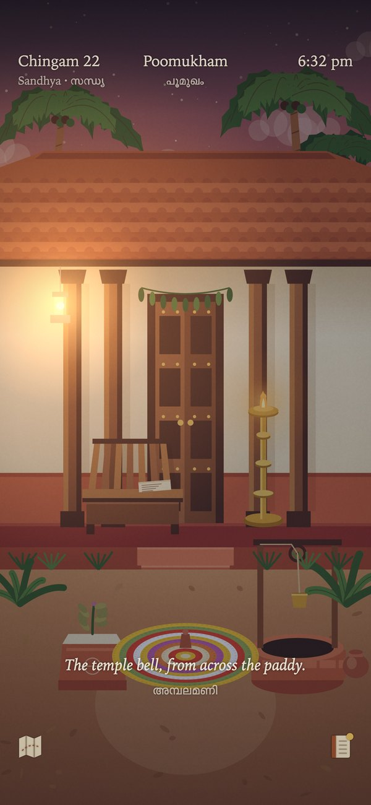
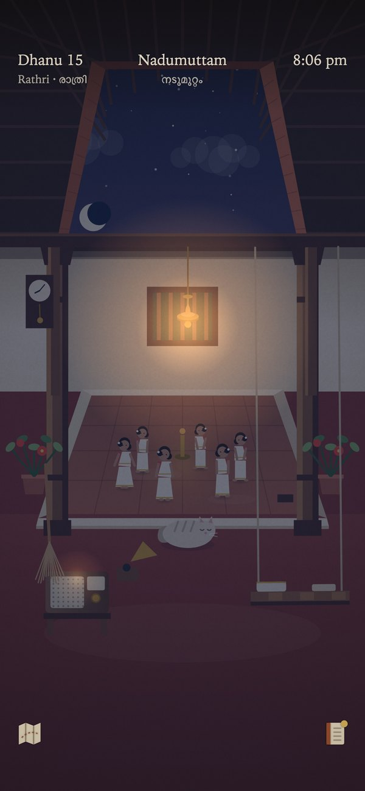
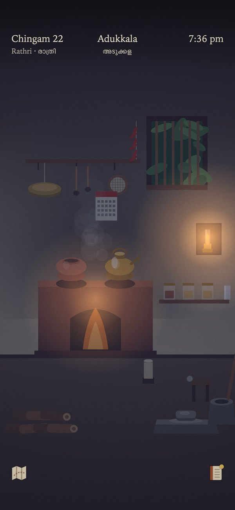
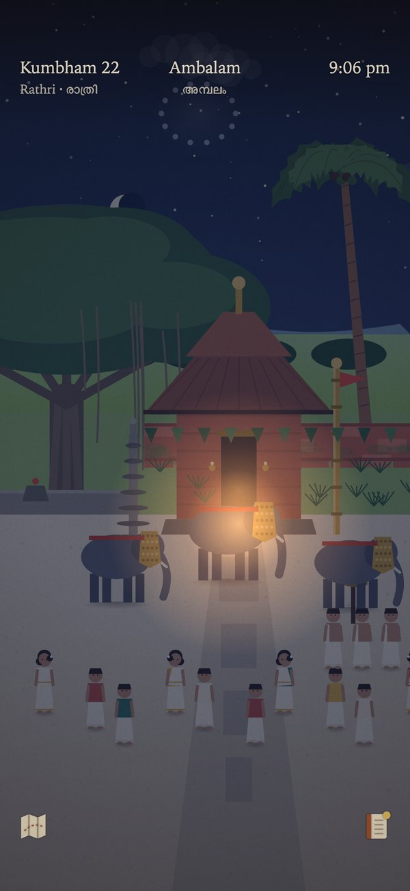
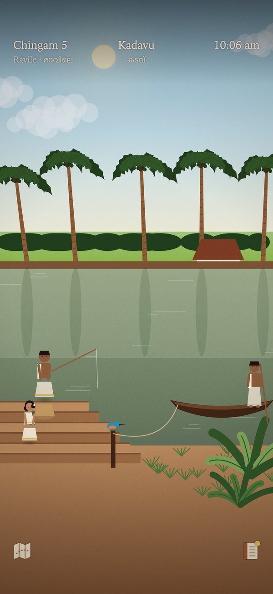
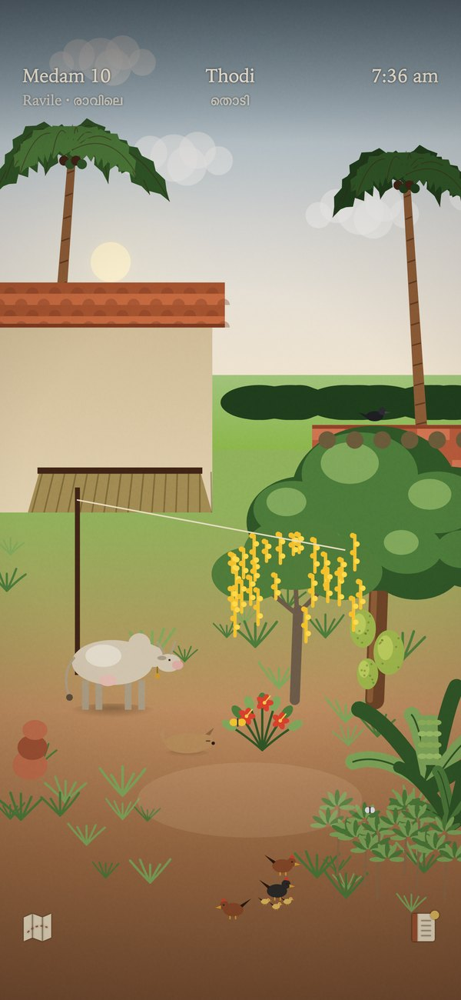

ഗ്രാമം · a slow life in old Kerala
You have come home to the family tharavad after years away. Light the nilavilakku at dusk, draw water from the kinar, boil kaapi on the aduppu, walk the lane to the chayakkada for the day’s gossip. Nothing is scored. Nothing can be lost. The Malayalam calendar turns, and the house remembers.
Free. No ads, no purchases, no account, no tracking. Works offline. Headphones recommended.


There are no menus. You tap the kettle, the pulley, the lamp. Wait a moment and the house shows you where.
Light the lamp at sandhya, sweep the nadumuttam, feed the cow, hang the mundus, pound rice in the ural, make kaapi with jaggery.
The chayakkada, the kada where everything is written in the credit book, the vayanasala, the temple, the paddy, the river ferry.
Pookalam for ten days to Thiruvonam, the kani at dawn on Vishu, women dancing on Thiruvathira night, the Ramayanam read in the rain month.
Light, weather, sound and visitors all follow the Malayalam calendar and the hour.

Sixteen recipes from Amma’s notebook, cooked on the clay hearth.

Three elephants in gold, chenda, fireworks over the paddy.

Pappan’s ferry, the fisherman, the snake boat on Uthrattathi.

Lakshmi the cow, the hens, the konna gold for Vishu.
Seven in the tharavad, eleven in the village, three across the river. Every object is period-correct, 1950 to 1980.
Free on iPhone and Android, soon. No ads, no account, no data collected.